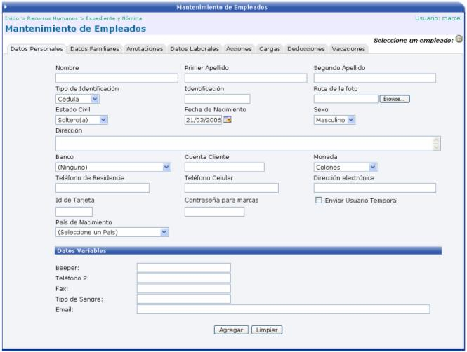
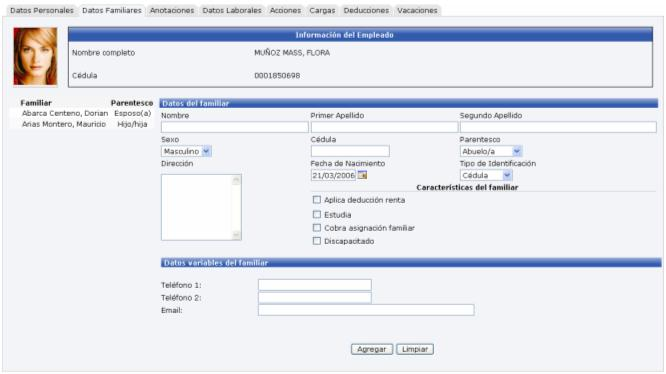
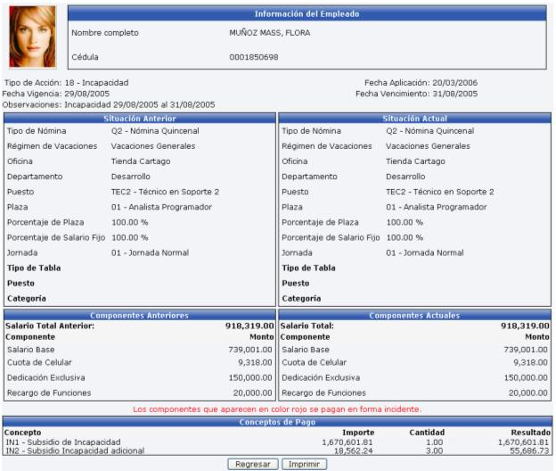
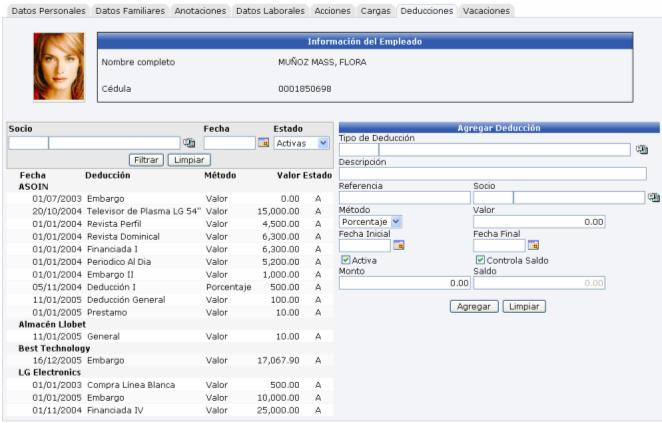
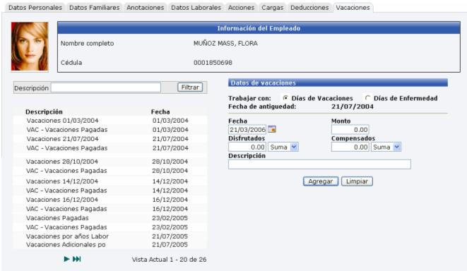

Lo primero que se debe de hacer para manejar el sistema de Recursos Humanos es la creación del expediente de los empleados de la empresa.
El expediente tiene como objetivos, poder tener la información del empleado de una manera automatizada, con lo cual el usuario puede consultar y modificar tanto datos personales como los de su situación laboral en la empresa, conocer el núcleo familiar del empleado, llevar un registro de las anotaciones tanto positivas como negativas, registrar Cargas Obrero – Patronales, Deducciones y Vacaciones.
Dicho expediente consta de 7 fichas, que registran información diferente del empleado. Las mismas son:
Datos Personales
Datos Familiares
Anotaciones
Datos Laborales
Acciones
Cargas
Deducciones
Vacaciones
A continuación se detalla cada una de ellas:
1.1 Datos Personales.
En esta ficha se guarda cierta información del empleado como su nombre, su número de cédula, fecha de nacimiento, sexo, números telefónicos, cuenta de correo, entre otros. Además consta de una sección de Datos Variables, que el usuario puede crear según sus necesidades en la sección de Parámetros RH – Etiquetas por Empresa (este proceso se explicará en un manual aparte).
La cuenta de Correo Electrónico tiene un papel muy importante dentro de los datos del empleado, ya que por medio de esta se le estará enviando a los trabajadores la boleta de pago o diferentes recordatorios, entre otros.
Además permite almacenar la fotografía del empleado, esto con el objetivo de poder tener un mejor reconocimiento del mismo.

Una vez que se ha creado a un empleado, este no se puede borrar o eliminar del sistema, solamente se puede inhabilitar o desactivar cuando deja de laborar en la empresa.
1.2 Datos Familiares.
Para tener acceso a esta ficha, se debe primero agregar los datos de la ficha “Datos Personales”.
En esta sección se detalla cierta información sobre los familiares del empleado, como nombre, sexo, parentesco (esposo/a, hijo/a, tío/a, padre/madre, etc.). Si aplica o no la deducción de la renta, si estudia, entre otros. Cabe recordar que para el cálculo del impuesto sobre la renta se toma en cuenta el cónyuge y los hijos que tenga el empleado.
También cuenta con una sección de Datos Variables.

1.3 Anotaciones.
Esta ficha tiene como objetivo dar mantenimiento a todas las observaciones que se le hagan al empleado durante el tiempo que este labore para la empresa. Las observaciones pueden ser tanto positivas (reconocimientos, cualidades, etc.) como negativas (amonestaciones, etc.)
Se debe de indicar la fecha, el Tipo de la Anotación (negativa, positiva) y una breve descripción de dicha anotación.
1.4 Datos Laborales.
Esta es una ficha informativa o de consulta, donde se le muestra al usuario el historial laboral del empleado dentro de la empresa, o sea todas las acciones que ha tenido.

Para ver el detalle de cada línea se debe dar un click sobre el registro a consultar y se desplegará la información de la acción.

1.5 Acciones.
Las Acciones de Personal son importantes debido a que en ellas se registran los movimientos que el empleado a tenido en la empresa, brindándole así al usuario del sistema, una buena administración de la información, para tener un perfil del empleado y le ayude en la toma de decisiones en caso que sea necesario.
Esta ficha contiene el mismo mantenimiento de la opción “Registro de Acciones de Personal”. Aquí se puede agregar, eliminar o modificar, una acción de personal al empleado. Solamente se puede eliminar una acción que NO este aplicada.
Toda la información que aquí se registre se podrá consultar luego en la ficha anterior “Datos Laborares”, una vez que se aplique la misma.

1.6 Cargas.
Las cargas son aquellos rebajos de salario que son compartidos entre el empleado y el patrono. Existen cargas que son de Ley y otras no. Por ejemplo una carga de Ley es la que se paga al Seguro Social y una carga que no es de Ley es la de la Asociación Solidarista de la empresa.

Se debe seleccionar el tipo de carga, y el rango de fechas en que va a regir. El campo Fecha Final, puede quedar vacío. Si esta activado el check “Tomar valores el catálogo”, automáticamente el sistema toma los valores que están registrados para ese tipo de carga que se selecciono y no permite que la información sea indicada al momento de ingresarse la carga para cada uno de los empleados
Si se desactiva dicho check, se muestran dos campos nuevos a llenar: Valor Patrono y Valor Empleado, los cuales tienen prioridad sobre los valores que tenga el catálogo, a la hora de calcular la nómina.

1.7 Deducciones.
Las deducciones son los rebajos que se le aplican al salario de un empleado. Son únicos y exclusivamente de él. No son compartidos como en el caso de las Cargas. Algunos ejemplos de deducciones son los embargos, los préstamos, etc.
En esta ficha se debe de indicar el tipo de deducción, una breve descripción, una referencia (esta puede ser el consecutivo de una factura, el número de un documento, etc.), el socio de negocio (persona o ente que emite el documento de deducción), el método (este puede ser un valor o un porcentaje), el valor de ese método (el monto del rebajo, lo que se le va a rebajar del salario al empleado), el rango de fechas en que va a efectuar esa deducción. Indicar si está activa y si controla el saldo.
Si el check “Controla Saldo” se activa, se debe de llenar el campo Monto, que indica el monto total o principal, del préstamo o del embargo. El campo Saldo se actualiza automáticamente cada vez que se cierra una nómina.
Al estar activado este check, cuando el saldo de la deducción sea cero, o sea cuando se haya terminado de pagar, el sistema automáticamente desactiva dicho rebajo y no lo aplica más.

1.8 Vacaciones.
En esta ficha es donde se da mantenimiento al registro de las vacaciones de un empleado.
Esta sección se diferencia de una Acción
de Personal de tipo Vacaciones, porque aquí es donde se realizan los ajustes
de vacaciones ya sea que se le aumenten  o
se le resten
o
se le resten  días, a los asignados en la acción.
días, a los asignados en la acción.
Debe de seleccionar si desea trabajar con los días de vacaciones o los días de enfermedad. Estos días son a los que el empleado tiene derecho a enfermarse sin que se los rebajen del salario.
Posteriormente debe se seleccionar la fecha, el número de días que va a tomar de vacaciones (Disfrutados), y una descripción.
En el caso que haya seleccionado trabajar con los Días de Vacaciones, debe de especificar el monto del rebajo y el número de días compensados por la empresa (Compensados)
